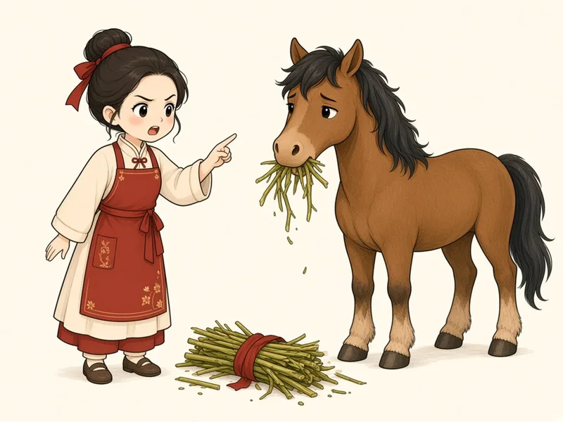

<!doctype html>
<html lang="th"><head><meta charset="utf-8"><meta name="viewport" content="width=device-width,initial-scale=1,viewport-fit=cover"><meta name="robots" content="noindex,nofollow">
<link rel="icon" type="image/png" href="../../assets/icons/favicon-64.png">
<link rel="stylesheet" href="../../fonts/fonts.css"><link rel="stylesheet" href="../../style.css"><link rel="stylesheet" href="../../style2.css"><link rel="stylesheet" href="../../piclearn.css"><link rel="stylesheet" href="../../l1.css"><link rel="stylesheet" href="../../fx2.css">
<link rel="stylesheet" href="common.css">
<script src="dur.js"></script><script src="clips.js"></script><script>Object.assign(window.DUR,{mama:1.87,'zhongwen-m':1.87,mmmm:1.92,'mmmm-s':2.86})</script><script src="common.js"></script>
<title>เหล่าซือลามา · บท 0-2 วรรณยุกต์ 4 เสียง</title>
<style>
.mgoal{margin:6px 18px 0;padding:10px 14px;border-radius:16px;background:#fff;border:1.5px solid #EDE4D8;display:flex;align-items:center;gap:10px;text-align:left}
.mgoal b{font-size:15px;color:var(--ink)}.mgoal .zh{font-size:20px;color:var(--red)}
.mgoal small{display:block;font-size:12.5px;color:var(--sub2);margin-top:1px}
.mgoal .tm{margin-left:auto;flex:none;font-size:12.5px;font-weight:600;color:var(--sub2);background:#F6F1EA;border-radius:999px;padding:4px 10px}
.mhook{font-size:19px;font-weight:700;margin:14px 20px 0;line-height:1.4}
.mpic{width:min(150px,40vw);height:min(150px,40vw);border-radius:22px;overflow:hidden;margin:10px auto 0;background:#FFF8EC;box-shadow:0 0 0 1px #EADFCF,0 6px 18px rgba(120,80,40,.12)}
.mpic img{width:100%;height:100%;object-fit:cover;display:block}
.msnd{display:grid;grid-template-columns:1fr 1fr;gap:12px;margin:14px 20px 0}
.msnd .v4card{padding:12px 8px}
.msnd .k{font-size:15px;font-weight:700;color:var(--sub2)}
.msnd .audio{width:64px;height:64px}
.pgrid.mab .opt{aspect-ratio:auto;height:64px;font-size:22px;font-weight:700}
.mrev2{display:grid;grid-template-columns:1fr 1fr;gap:12px;margin:12px 18px 0}
.mrev2 .v4card{padding:10px 8px 12px}
.mrev2 .mpic{width:100%;height:auto;aspect-ratio:1/1;margin:0}
.mrev2 .py{font-size:28px;font-weight:700;line-height:1.1}.mrev2 .zh{font-size:24px}
.mrev2 .l1ct{width:64px;height:44px}
.m4row{display:grid;grid-template-columns:repeat(4,1fr);gap:8px;margin:12px 18px 0}
.m4row .c{background:#fff;border:1.5px solid #EDE4D8;border-radius:14px;padding:6px 4px;display:flex;flex-direction:column;align-items:center;gap:2px;font-size:12.5px}
.m4row .c img{width:100%;aspect-ratio:1/1;object-fit:cover;border-radius:10px}
.m4row .c.q img{filter:blur(5px) grayscale(.5);opacity:.55}
.m4row .c b{font-size:17px}
.mword{display:flex;align-items:center;gap:14px;margin:8px 20px 0;text-align:left}
.mword .mpic{margin:0;flex:none;width:118px;height:118px}
.mword .zh{font-size:46px;line-height:1}
.mword .py{font-size:40px;font-weight:700;line-height:1.1}
.mword .mn{font-size:17px;font-weight:600}
.mword .l1tbig{margin:0}
.mtb .l1tbig{width:min(250px,64vw);height:min(150px,38vw);margin:10px auto 0}
.mhint{margin:12px 22px 0;padding:10px 14px;border-radius:14px;background:#F6F1EA;font-size:14.5px;line-height:1.5;text-align:left}
.mhint b{font-size:16px}
.mrec{display:flex;flex-direction:column;align-items:center;margin-top:14px}
.mrec .hold{width:112px;height:112px;border-radius:50%;border:0;background:var(--red);color:#fff;display:flex;flex-direction:column;align-items:center;justify-content:center;gap:2px;font:600 13px/1.25 inherit;box-shadow:0 6px 18px rgba(200,16,46,.25);touch-action:none;user-select:none;-webkit-user-select:none;transition:transform .15s}
.mrec .hold svg{width:34px;height:34px}
.mrec .hold.on{transform:scale(1.1);box-shadow:0 0 0 12px rgba(200,16,46,.15),0 6px 18px rgba(200,16,46,.25)}
.mrec .st{font-size:13.5px;color:var(--sub2);margin-top:10px;min-height:20px}
.mcmp{display:grid;grid-template-columns:1fr 1fr;gap:10px;margin:12px 18px 0}
.mcmp button{display:flex;align-items:center;gap:8px;justify-content:center;height:54px;border-radius:16px;background:#fff;border:1.5px solid #EDE4D8;font:600 15px inherit;color:var(--ink)}
.mcmp button svg{width:22px;height:22px}
.mcmp button.me{color:#3A64A8}.mcmp button.cn{color:var(--red)}
.mcmp button.off{opacity:.35;pointer-events:none}
.mcmp button.playing{border-color:currentColor;box-shadow:0 0 0 3px rgba(0,0,0,.05)}
.mcmp .alt{grid-column:1/3;height:48px;background:#F6F1EA;border-color:#F6F1EA}
.mrevtag{display:inline-flex;align-items:center;gap:6px;padding:4px 12px;border-radius:999px;background:#EEF3FA;color:#3A64A8;font-size:12.5px;font-weight:700}
.mrevnote{margin:10px 22px 0;font-size:13px;color:var(--sub2);text-align:center;line-height:1.45}
.pgrid .opt.mtxt{aspect-ratio:auto;height:72px;font-size:22px;font-weight:700}
.mscene{width:calc(100% - 32px);margin:8px 16px 0;border-radius:22px;overflow:hidden;box-shadow:0 0 0 1px #EADFCF,0 6px 18px rgba(120,80,40,.12)}
.mscene img{width:100%;display:block}
.msent{display:flex;justify-content:center;gap:8px;margin:14px 12px 0}
.msent button{display:flex;flex-direction:column;align-items:center;padding:8px 10px;border-radius:16px;background:#fff;border:1.5px solid #EDE4D8;min-width:62px}
.msent .zh{font-size:34px;line-height:1.1}.msent .py{font-size:16px;font-weight:700}
.msent small{font-size:11.5px;color:var(--sub2)}
.mth{font-size:20px;font-weight:700;margin-top:10px}
.mpt{display:flex;flex-direction:column;align-items:center;gap:4px}
.ptile .mpt img{width:100%;aspect-ratio:1/1;object-fit:cover;border-radius:14px}
.mgoal b{white-space:nowrap;font-size:14.5px}
.msnd .v4card{display:flex;flex-direction:column;align-items:center;gap:8px}
.pgrid.mab .opt,.pgrid .opt.mtxt{background:#fff;border:1.5px solid #EDE4D8;border-radius:18px;box-shadow:0 2px 0 #EDE4D8}
.mrev2 .v4card{display:flex;flex-direction:column;align-items:center;gap:4px}
.mrev2 .l1ct{display:block;width:84px;height:48px;margin:0 auto}
</style></head><body>
<script>
/* 4 คำจริง: เรียนวรรณยุกต์ผ่านความหมาย */
const W=[null,
 {zh:'妈',py:'mā',th:'แม่',img:'../../assets/art/word/妈妈.webp',hint:'พูดคำว่า <b>"มา"</b> แต่ยกเสียงให้สูงกว่าปกติ แล้วค้างไว้ยาว ๆ',ty:'สูง เรียบ ค้างไว้ · 55'},
 {zh:'麻',py:'má',th:'ป่าน',img:'art/ma2.webp',hint:'ใกล้เคียงตอนถามว่า <b>"หา?"</b> เสียงไต่ขึ้นจากกลางไปสูง',ty:'ไต่ขึ้น · 35'},
 {zh:'马',py:'mǎ',th:'ม้า',img:'../../assets/art/word/马.webp',hint:'ใกล้เคียงตอนลังเลว่า <b>"เอ่อ..."</b> กดเสียงต่ำลงก่อน แล้วยกขึ้นนิดตอนท้าย<br><small>ถ้าเสียง 3 อยู่หน้าเสียงอื่น มักกดต่ำอย่างเดียว ไม่ยกขึ้น</small>',ty:'ลงต่ำ แล้วยกขึ้น · 214'},
 {zh:'骂',py:'mà',th:'ดุ',img:'art/ma4.webp',hint:'ใกล้เคียงตอนปฏิเสธหนัก ๆ ว่า <b>"ไม่!"</b> เริ่มสูงแล้วตกลงเร็ว',ty:'ตกลงเร็ว · 51'}];
const MIC=`<svg viewBox="0 0 24 24" fill="none" stroke="currentColor" stroke-width="1.9" stroke-linecap="round"><rect x="9" y="3" width="6" height="11" rx="3" fill="currentColor"/><path d="M5.5 11a6.5 6.5 0 0 0 13 0M12 17.5V21"/></svg>`;
const pic=(t,c='mpic')=>`<div class="${c}"></div>`;
const tag=(t,s)=>`<div class="center"><div class="cap">คำที่ ${t}/4 · ${s}</div></div>`;

/* 1 · เปิดบท: เป้าหมาย + ชนะใน 30 วินาที */
const hook={kind:'q',ans:0,auto:'ma1',
 html:()=>`<div class="mgoal"><div><b>จบบทนี้ คุณจะอ่าน <span class="zh">妈妈骂马</span> ได้</b><small>เรียนวรรณยุกต์ 4 เสียงผ่าน 4 คำจริง</small></div><span class="tm">ประมาณ 4 นาที</span></div>
 <div class="center"><div class="mhook">ฟัง 2 เสียงนี้<br>เสียงใดแปลว่า "แม่"</div>${pic(1)}</div>
 <div class="msnd"><div class="v4card"><span class="k">เสียง A</span><button class="audio press" data-play="ma1">${SPK}</button></div><div class="v4card"><span class="k">เสียง B</span><button class="audio press" data-play="ma3">${SPK}</button></div></div>
 <div class="pgrid v4two mab"><button class="opt press" data-i="0">เสียง A</button><button class="opt press" data-i="1">เสียง B</button></div>`,
 show:st=>{if(TOPW.__quiet||SHOT!=null)return;setTimeout(async()=>{const b=$$('.msnd .audio',st);bump(b[0]);await wait(play('ma1'));if(E.i!==0)return;bump(b[1]);play('ma3')},500)},
 fb:ok=>`เสียง A คือ <b class="t1">mā</b> <span class="zh">妈</span> = แม่ · เสียง B คือ <b class="t3">mǎ</b> <span class="zh">马</span> = ม้า`,
 demo:async d=>{if(d==='ok')answer(0);await wait(500)}};
/* 2 · เฉลย: เสียงเปลี่ยน ความหมายเปลี่ยน */
const reveal={kind:'teach',html:()=>`<div class="center l1snd"><div class="large" style="padding:4px 0 0;font-size:24px">เสียงเปลี่ยน ความหมายก็เปลี่ยน</div>
 <p class="l1p v4fit">ตัวอักษร m กับ a เหมือนกันทุกตัว ต่างกันแค่ระดับเสียงสูงต่ำ ซึ่งเรียกว่า วรรณยุกต์</p></div>
 <div class="mrev2">${[1,3].map(t=>`<button class="v4card press tc${t}" data-play="ma${t}">${pic(t)}<span><b class="py t${t}">${W[t].py}</b> <span class="zh">${W[t].zh}</span></span>${contour(t)}<span style="font-size:15px;font-weight:600">${W[t].th}</span></button>`).join('')}</div>
 <p class="mrevnote">ภาษาจีนมี 4 เสียง บทนี้เรียนผ่าน 4 คำ</p>
 <div class="m4row">${[1,2,3,4].map(t=>`<div class="c tc${t} ${t===1||t===3?'':'q'}"><b class="t${t}">${t===1||t===3?W[t].py:'?'}</b>${t===1||t===3?`<span class="v4lab">${W[t].th}</span>`:''}</div>`).join('')}</div>`};

/* ขั้น ก · คำ + ภาพ + เส้นเสียง + เทียบเสียงไทย (ข้อความเท่านั้น) */
const word=t=>({kind:'teach',html:()=>`${tag(t,'ฟังคำจริง')}
 <div class="mword tc${t}">${pic(t)}<div><div><span class="zh">${W[t].zh}</span> <span class="py t${t}">${W[t].py}</span></div><div class="mn">= ${W[t].th}</div><div class="cap" style="margin-top:2px">เสียง ${t} · ${W[t].ty}</div></div></div>
 <div class="mtb center"><div class="l1tbig tc${t}">${contour(t,{hide:1,dot:1,guide:1})}</div></div>
 <div class="mhint"><span class="cap">เทียบเสียงไทย · ลองพูดเบา ๆ</span><br>${W[t].hint}</div>
 <div class="center"><button class="audio lg press" data-play="ma${t}" data-svg=".l1tbig svg" style="margin-top:12px">${SPK}<span>ฟังอีกครั้ง</span></button></div>`,
 show:st=>setTimeout(()=>{if(+document.body.dataset.step===E.i){bump($('.audio',st));sayTone(`ma${t}`,$('.l1tbig svg',st))}},500),
 demo:async()=>{await wait(200)}});

/* ขั้น ข · ลากนิ้วตามเส้น (เหมือน final.html) */
const trace=t=>({kind:'teach',lock:true,html:()=>{const T=TONE[t];return `${tag(t,'ลากตามเส้น')}<div class="center l1snd">
 <p class="l1p">แตะจุดที่กะพริบ แล้วลากนิ้วไปตามเส้นขณะฟังเสียง</p>
 <div class="v4trace tc${t}"><svg viewBox="0 0 100 100">${RULE}<path class="gd" d="${T.p}" fill="none" stroke="#E6DCCF" stroke-width="9" stroke-linecap="round" stroke-linejoin="round"/>
 <path class="tr" d="${T.p}" fill="none" stroke="currentColor" stroke-width="7" stroke-linecap="round" stroke-linejoin="round"/>
 <circle class="st" r="6" fill="currentColor"/><circle class="en" r="4" fill="none" stroke="#C9BBAA" stroke-width="2"/></svg></div>
 <div><span class="v4big t${t}">${W[t].py}</span> <span class="zh v4zh">${W[t].zh}</span></div><div class="v4ok v4need">ลากให้ถึงปลายเส้น</div></div>`},
 show:st=>traceInit(st,t),demo:async d=>{if(d==='half')await autoTrace(900,.55,true);if(d==='done')await autoTrace(600,1,true)}});
let TR=null;
function traceInit(st,t){const box=$('.v4trace',st),svg=$('svg',box),p=$('.tr',svg),L=p.getTotalLength(),N=60;
 const pts=[...Array(N+1)].map((_,i)=>p.getPointAtLength(L*i/N));const s0=pts[0],e=pts[N];
 $('.st',svg).setAttribute('cx',s0.x);$('.st',svg).setAttribute('cy',s0.y);$('.en',svg).setAttribute('cx',e.x);$('.en',svg).setAttribute('cy',e.y);
 p.style.strokeDasharray=L;p.style.strokeDashoffset=L;
 TR={t,k:0,drag:false,set(k){this.k=Math.max(this.k,k);p.style.strokeDashoffset=L*(1-this.k/N);const q=pts[this.k];$('.st',svg).setAttribute('cx',q.x);$('.st',svg).setAttribute('cy',q.y);
   if(this.k>=N-2&&!box.classList.contains('done')){box.classList.add('done');p.style.strokeDashoffset=0;const ok=$('.v4ok',st);ok.classList.add('on');ok.textContent='เยี่ยม ลากได้ตรงระดับเสียง';setTimeout(()=>play(`ma${t}`),250);unlock()}},pts,svg,N};
 const loc=ev=>new DOMPoint(ev.clientX,ev.clientY).matrixTransform(svg.getScreenCTM().inverse());
 const near=pt=>{let best=-1,bd=1e9;for(let i=TR.k;i<=Math.min(N,TR.k+10);i++){const d=Math.hypot(pts[i].x-pt.x,pts[i].y-pt.y);if(d<bd){bd=d;best=i}}return bd<16?best:-1};
 svg.addEventListener('pointerdown',ev=>{const pt=loc(ev);if(Math.hypot(pt.x-pts[TR.k].x,pt.y-pts[TR.k].y)<18){TR.drag=true;svg.setPointerCapture(ev.pointerId);if(TR.k===0)play(`ma${t}`)}});
 svg.addEventListener('pointermove',ev=>{if(!TR.drag)return;const i=near(loc(ev));if(i>=0)TR.set(i)});
 svg.addEventListener('pointerup',()=>TR.drag=false)}
async function autoTrace(ms,upto=1){const f=$('#finger'),m=TR.svg.getScreenCTM(),pos=i=>new DOMPoint(TR.pts[i].x,TR.pts[i].y).matrixTransform(m);
 let a=pos(0);f.style.transition='none';f.style.transform=`translate(${a.x}px,${a.y}px)`;f.style.opacity=1;f.classList.add('down');
 const t0=performance.now(),end=Math.round(TR.N*upto);
 await new Promise(r=>{const g=now=>{const k=Math.max(0,Math.min(1,(now-t0)/ms)),i=Math.round(k*end);TR.set(i);const q=pos(i);f.style.transform=`translate(${q.x}px,${q.y}px)`;if(k<1)requestAnimationFrame(g);else r()};requestAnimationFrame(g)})}

/* ขั้น ค · อัดเสียงตัวเอง แล้วฟังเทียบกับเสียงจีน (ไม่มีการให้คะแนน) */
const REC={url:null,mr:null,chunks:[],stream:null,au:null};
function recUI(st,state,msg){const s=$('.mrec .st',st);if(s)s.textContent=msg||'';$$('.mcmp button',st).forEach(b=>b.classList.toggle('off',state!=='ready'));}
async function recStart(st){try{REC.stream=REC.stream||await navigator.mediaDevices.getUserMedia({audio:true});}catch(e){recUI(st,'none','ไม่สามารถใช้ไมโครโฟนได้ กด "ต่อไป" เพื่อเรียนต่อ');return}
 REC.chunks=[];REC.mr=new MediaRecorder(REC.stream);REC.mr.ondataavailable=e=>REC.chunks.push(e.data);
 REC.mr.onstop=()=>{if(REC.url)URL.revokeObjectURL(REC.url);REC.url=URL.createObjectURL(new Blob(REC.chunks,{type:REC.mr.mimeType}));recUI(st,'ready','อัดเสียงแล้ว ลองฟังเทียบกัน');};
 REC.mr.start();$('.hold',st).classList.add('on');recUI(st,'rec','กำลังอัดเสียง… ปล่อยนิ้วเมื่อพูดจบ')}
function recStop(st){$('.hold',st).classList.remove('on');if(REC.mr&&REC.mr.state==='recording')REC.mr.stop()}
function playMe(){return new Promise(r=>{if(!REC.url)return r();const a=new Audio(REC.url);a.onended=r;a.onerror=r;a.play().catch(r)})}
const rec=t=>({kind:'teach',btn:'ต่อไป',html:()=>`${tag(t,'อัดเสียงแล้วฟังเทียบ')}
 <div class="mword tc${t}" style="justify-content:center">${pic(t,'mpic')}<div><div><span class="zh">${W[t].zh}</span> <span class="py t${t}">${W[t].py}</span></div><div class="mn">= ${W[t].th}</div>${contour(t,{cls:'pic-t'}).replace('class="l1ct','style="width:70px;height:46px" class="l1ct')}</div></div>
 <div class="mrec"><button class="hold" aria-label="กดค้างเพื่ออัดเสียง">${MIC}<span>กดค้าง<br>แล้วพูด</span></button><div class="st">กดปุ่มค้างไว้ พูดว่า ${W[t].py} แล้วปล่อย</div></div>
 <div class="mcmp"><button class="me off" data-r="me">${SPK}เสียงของคุณ</button><button class="cn off" data-r="cn">${SPK}เสียงจีน</button><button class="alt off" data-r="alt">ฟังสลับกัน 2 รอบ</button></div>`,
 show:st=>{const h=$('.hold',st);h.addEventListener('pointerdown',e=>{e.preventDefault();recStart(st)});['pointerup','pointerleave','pointercancel'].forEach(ev=>h.addEventListener(ev,()=>recStop(st)));
  h.addEventListener('contextmenu',e=>e.preventDefault());
  $('.mcmp',st).addEventListener('click',async e=>{const b=e.target.closest('[data-r]');if(!b)return;const k=b.dataset.r,me=$('.me',st),cn=$('.cn',st);
   const pc=async()=>{cn.classList.add('playing');await wait(play(`ma${t}`));cn.classList.remove('playing')};const pm=async()=>{me.classList.add('playing');await playMe();me.classList.remove('playing')};
   if(k==='me')pm();else if(k==='cn')pc();else{for(let i=0;i<2;i++){await pc();await wait(250);await pm();await wait(250)}}})},
 demo:async d=>{if(d==='done'){const st=$('#stage');recUI(st,'ready','อัดเสียงแล้ว ลองฟังเทียบกัน');$('.cn',st).classList.add('playing')}await wait(200)}});

/* คำถามทั่วไป: ฟังแล้วเลือก (รูป หรือ ข้อความ) */
const qPic=o=>({kind:'q',ans:o.opts.indexOf(o.t),auto:`ma${o.t}`,
 html:()=>`<div class="qm" id="qm">${mas('think')}</div><div class="center"><div class="cap v4tag">${o.tag}</div><div class="cap" style="font-size:14px;margin-top:2px">ฟังเสียง แล้วเลือกภาพที่ตรงกับความหมาย</div>
  <button class="audio press" style="width:84px;height:84px;margin-top:10px" data-play="ma${o.t}">${SPK}</button><div class="cap mt12">แตะเพื่อฟังอีกครั้ง</div></div>
  <div class="pgrid ${o.opts.length===3?'v4three':'v4two'}">${o.opts.map((t,i)=>`<button class="opt ptile press" data-i="${i}"><span class="k">${'ABCD'[i]}</span><span class="pic-t"></span>${o.lab?`<span class="plab">${W[t].th}</span>`:/ไม่มีตัวช่วยภาษาไทย/.test(o.tag)?'':`<span class="v4lab">${W[t].th}</span>`}</button>`).join('')}</div>`,
 show:st=>{setTimeout(()=>{if(!TOPW.__quiet&&SHOT==null&&E.steps[E.i].auto===`ma${o.t}`){bump($('[data-play]',st));play(`ma${o.t}`)}},450)},
 fb:()=>`<b class="t${o.t}">${W[o.t].py}</b> <span class="zh">${W[o.t].zh}</span> = ${W[o.t].th} · เสียง ${o.t} ${W[o.t].ty}`,
 demo:async d=>{if(d==='ok')answer(o.opts.indexOf(o.t));if(d==='bad')answer(o.opts.indexOf(o.t)===0?1:0);await wait(600)}});
const qT=o=>qTone({t:o.t,k:`ma${o.t}`,opts:o.opts,tag:o.tag});
/* ทบทวนแบบเว้นระยะ: คำถามจากบท 0-1 แทรกระหว่างบท */
const rv=o=>({kind:'q',ans:o.ans,auto:o.k,
 html:()=>`<div class="qm" id="qm">${mas('think')}</div><div class="center"><span class="mrevtag">ทบทวนบท 0-1 · ภาษาจีนคืออะไร</span>
  <div class="mhook" style="font-size:18px">${o.q}</div>${o.k?`<button class="audio press" style="width:76px;height:76px;margin-top:10px" data-play="${o.k}">${SPK}</button>`:''}</div>
  <div class="pgrid ${o.opts.length===3?'v4three':'v4two'}">${o.opts.map((x,i)=>`<button class="opt mtxt press" data-i="${i}">${x}</button>`).join('')}</div>
  <p class="mrevnote">คำถามทบทวนจากบทก่อน จะแทรกมาเป็นระยะ เพื่อไม่ให้ลืม</p>`,
 show:st=>{if(o.k)setTimeout(()=>{if(!TOPW.__quiet&&SHOT==null&&E.steps[E.i].auto===o.k){bump($('[data-play]',st));play(o.k)}},450)},
 fb:()=>o.fb,demo:async d=>{if(d==='ok')answer(o.ans);await wait(500)}});

/* ตอนจบ: อ่าน 妈妈骂马 */
const fin={kind:'teach',btn:'จบบทเรียน',html:()=>`<div class="center l1snd"><div class="cap">เป้าหมายของบทนี้</div><div class="large" style="padding:2px 0 0;font-size:24px">อ่านประโยคแรกของคุณ</div></div>
 <div class="mscene"></div>
 <div class="msent"><button class="press" data-play="mama"><span class="zh">妈妈</span><span class="py t1">māma</span><small>แม่</small></button><button class="press tc4" data-play="ma4"><span class="zh">骂</span><span class="py t4">mà</span><small>ดุ</small></button><button class="press tc3" data-play="ma3"><span class="zh">马</span><span class="py t3">mǎ</span><small>ม้า</small></button></div>
 <div class="center"><div class="mth">แม่ดุม้า</div><p class="mrevnote" style="margin-top:4px">แตะแต่ละคำเพื่อฟัง · 妈 ตัวที่สองอ่านเบา ๆ สั้น ๆ</p>
 <button class="audio lg press" data-play="mmmm">${SPK}<span>ฟังทั้งประโยค</span></button></div>
`,
 show:st=>setTimeout(()=>{if(SHOT==null&&+document.body.dataset.step===E.i){bump($('.audio',st));play('mmmm')}},600)};

const lessonFor=t=>[word(t),trace(t),rec(t)];
start([hook,reveal,
 ...lessonFor(1),
 ...lessonFor(2),qPic({t:2,opts:[1,2],tag:'ตรวจ · 2 คำ'}),
 rv({q:'ฟังแล้วเลือกพินอินที่ได้ยิน',k:'hanzi-f',opts:['hànzì','pīnyīn','nǐ hǎo'],ans:0,fb:'<b>hànzì</b> <span class="zh">汉字</span> = ตัวจีน'}),
 ...lessonFor(3),qPic({t:3,opts:[2,3,1],tag:'ตรวจ · 3 คำ'}),
 rv({q:'ข้อใดเขียนพินอินครบพร้อมวรรณยุกต์',opts:['ma','mǎ','m'],ans:1,fb:'<b>mǎ</b> มีครบทั้งพยัญชนะ สระ และเครื่องหมายวรรณยุกต์'}),
 ...lessonFor(4),qPic({t:4,opts:[1,4,3,2],tag:'ตรวจ · ครบ 4 คำ'}),
 qT({t:3,opts:[2,4,1,3],tag:'ทดสอบท้ายบท 1/4 · ไม่มีตัวช่วยภาษาไทย'}),
 qPic({t:1,opts:[3,1,4,2],tag:'ทดสอบท้ายบท 2/4 · ไม่มีตัวช่วยภาษาไทย'}),
 qT({t:4,opts:[4,2,3,1],tag:'ทดสอบท้ายบท 3/4 · ไม่มีตัวช่วยภาษาไทย'}),
 qPic({t:2,opts:[4,3,2,1],tag:'ทดสอบท้ายบท 4/4 · ไม่มีตัวช่วยภาษาไทย'}),
 fin]);
</script></body></html>
